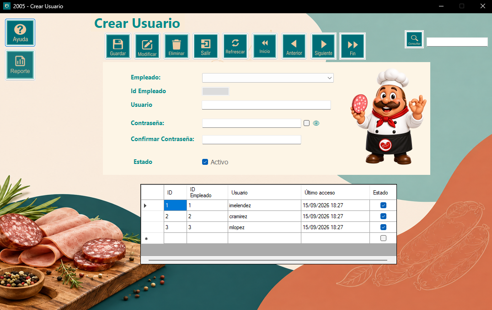
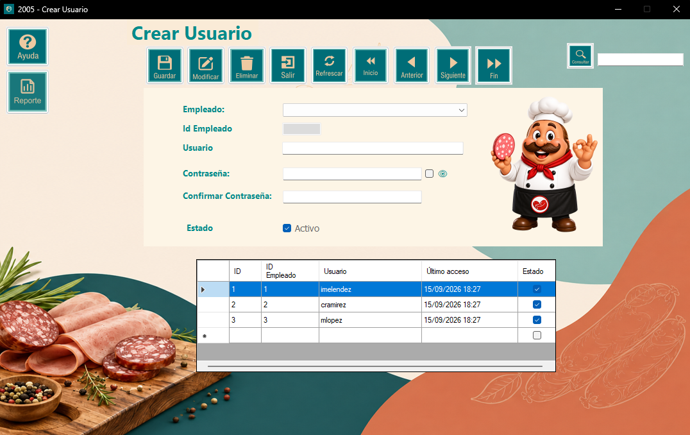
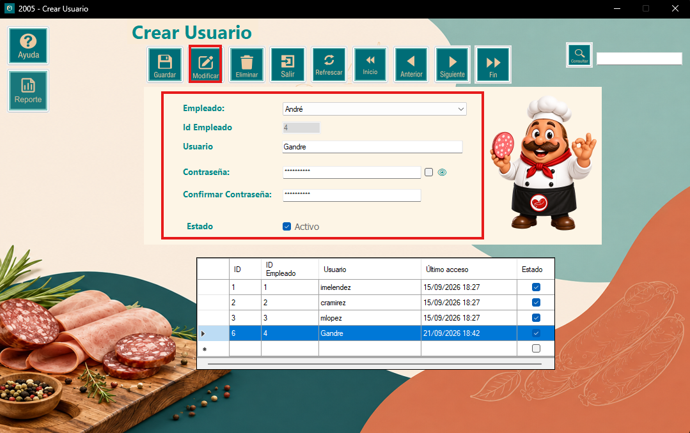
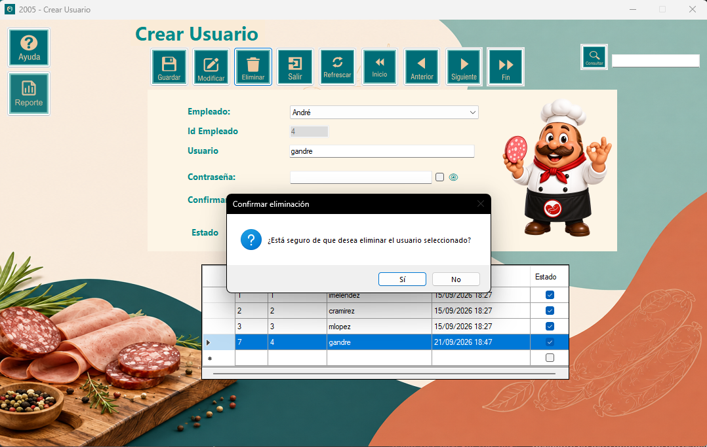
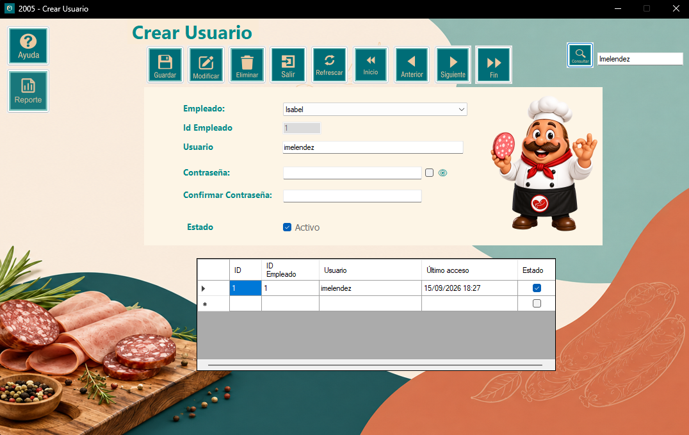
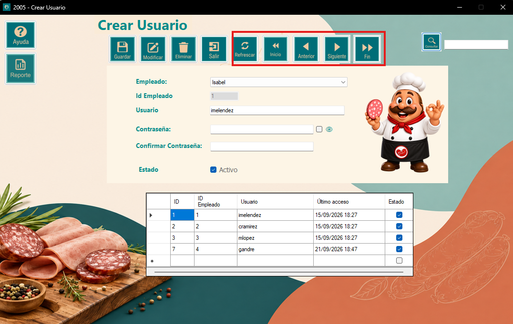
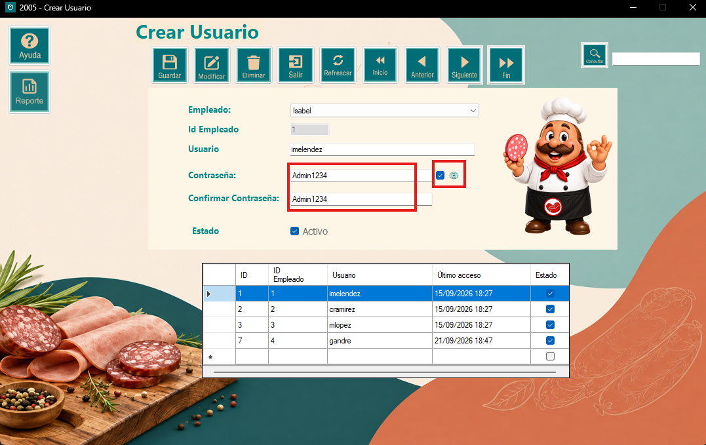
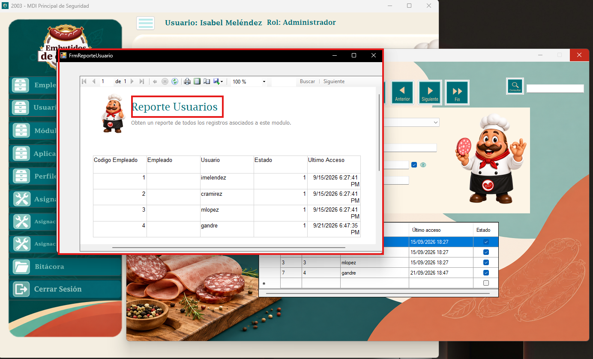

El módulo de Mantenimiento de Usuarios es parte del componente de Seguridad del sistema,
desarrollado para Embutidos de Calidad S.A. Su función principal es administrar las cuentas
de acceso al sistema, permitiendo registrar, consultar, modificar y eliminar usuarios
según las necesidades de la organización.
Cada usuario está vinculado a un empleado registrado en el sistema, cuenta con un nombre
de usuario, contraseña y un estado que indica si la cuenta se encuentra activa o inactiva.
Mantener este catálogo actualizado es fundamental para controlar correctamente quién
tiene acceso al sistema.

Esta ventana es la interfaz principal para la administración de los usuarios del sistema. Al cargar el formulario, la tabla muestra automáticamente todos los usuarios registrados. Al hacer clic sobre cualquier fila de la tabla, los datos de ese usuario se cargan automáticamente en los campos del formulario, listos para ser consultados o modificados.

A continuación se detallan los pasos: 1. Seleccionar el empleado al que pertenecerá la cuenta desde el combo desplegable. 2. Ingresar el nombre de usuario en el campo correspondiente. 3. Ingresar la contraseña y confirmarla en los campos de contraseña. 4. Marcar el checkbox de Estado si la cuenta estará activa. 5. Presionar el botón Guardar para almacenar el registro.
A continuación se detallan los pasos: 1. Seleccionar la fila del usuario que desea modificar en la tabla. 2. Los datos se cargarán automáticamente en el formulario. 3. Realizar los cambios necesarios en los campos. 4. Presionar el botón Modificar para guardar los cambios. 5. Si no se selecciona ninguna fila, el sistema mostrará un aviso indicando que debe seleccionar un registro primero.

A continuación se detallan los pasos: 1. Seleccionar la fila del usuario que desea eliminar en la tabla. 2. Presionar el botón Eliminar. 3. El sistema solicitará confirmación antes de proceder. 4. Al confirmar, el registro será removido del sistema de forma permanente.

A continuación se detallan los pasos: 1. Escribir el nombre de usuario que desea buscar en el campo Consultar. 2. Presionar el botón Consultar. 3. La tabla mostrará únicamente los usuarios que coincidan con el criterio ingresado. 4. Para volver a ver todos los registros, presionar el botón Refrescar.

El formulario proporciona el botón Refrescar que recarga todos los datos desde la base de datos, y botones de navegación que permiten desplazarse entre los registros de la tabla: 1. Inicio va al primer registro. 2. Anterior retrocede uno. 3. Siguiente avanza uno. 4. Fin va al último registro. Al navegar, los datos del registro seleccionado se cargan automáticamente en el formulario.

El formulario incluye un checkbox llamado Mostrar contraseña. Al marcarlo, los campos de contraseña y confirmación de contraseña mostrarán el texto ingresado en lugar de los asteriscos. Al desmarcarlo, los campos vuelven a ocultar el contenido.

El sistema permite obtener un reporte con todos los usuarios registrados. Para generarlo: 1. Presionar el botón Reporte. 2. Se abrirá una ventana con el listado completo de usuarios. 3. Desde la barra superior del reporte es posible desplazarse entre páginas, actualizar la información, ajustar el zoom, buscar un texto, imprimirlo o exportarlo.

Para salir de la ventana de usuarios, se deberá presionar el botón Salir o dar clic en la X que se encuentra en la parte superior derecha de la ventana.